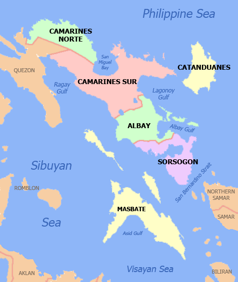

Resume Page
Color Game
Provinces and Cities in the Bikol Region
- Albay
- Camarines Norte
- Camarines Sur
- Catanduanes
- Masbate
- Masbate City
- Aroroy
- Mandaon
- Sorsogon
- Sorsogon City
- Gubat
- Bulan

*Map of The Bikol Region*
Counting in Bikolano (With Tagalog Translations Below Each)
- Saro
- Duwa
- Tulo
- Apat
- Lima
- Anom
- Pito
- Walo
- Siyam
- Sampulo
Video on How to Count in Bikolano
Filipino Population by U.S. State
Go to top